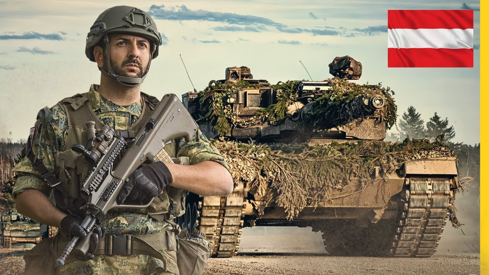
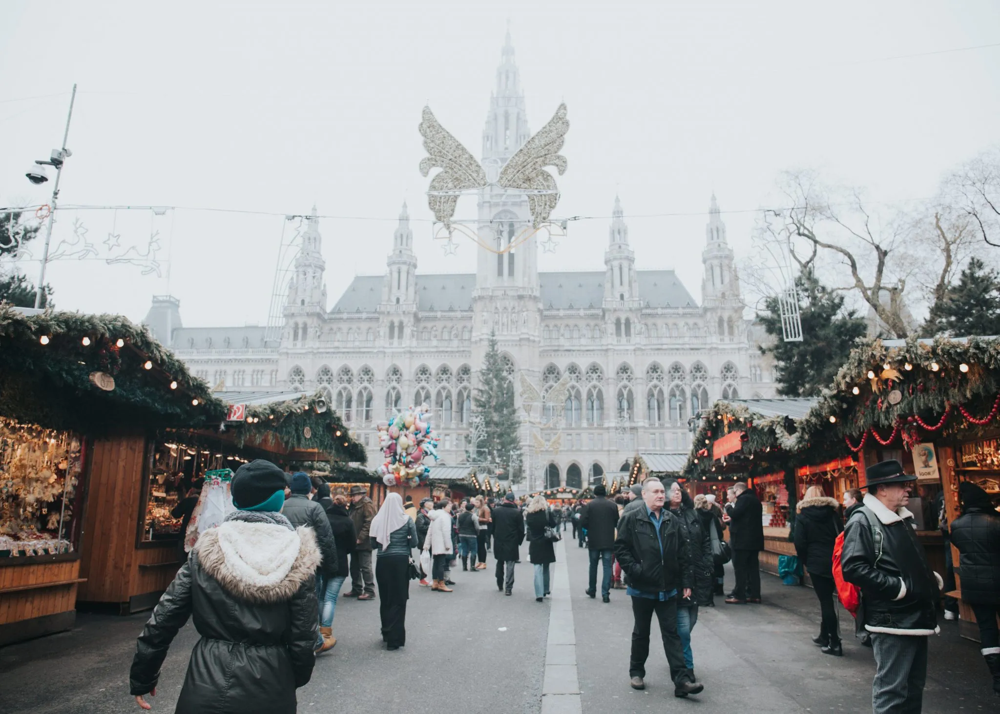
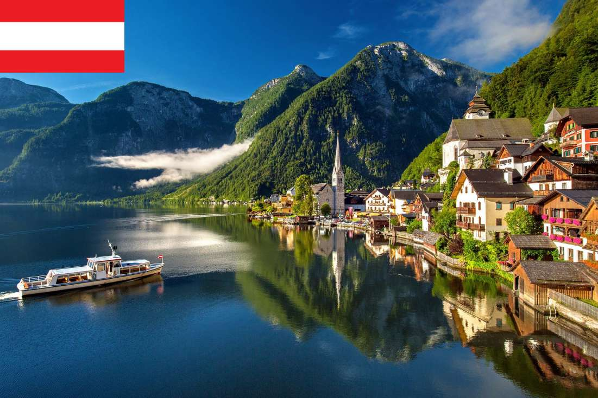

Other about Austria
Austria is a member of several important international organizations and alliances. It is part of the European Union (EU), the United Nations (UN), and the Organization for Security and Co-operation in Europe (OSCE). Austria also participates in numerous regional initiatives promoting trade, security, and cultural exchange across Europe and beyond. Its neutral status allows it to act as a mediator in international conflicts while maintaining strong diplomatic relationships with neighboring countries and global partners.

Austria has a strong and stable economy, ranking among the top 20 countries globally in terms of GDP per capita. The country is known for its advanced industrial sector, vibrant tourism industry, and high-quality agricultural products. Vienna, Linz, and Graz serve as economic hubs, hosting major corporations, international companies, and financial institutions. Austria maintains low unemployment rates and invests in innovation, research, and sustainable technologies, contributing to its reputation as a prosperous and modern economy.

The Austrian education system is highly regarded worldwide. Primary, secondary, and higher education are accessible to all citizens, with free or low-cost schooling available throughout the country. Austria ranks among the top countries in Europe for literacy, quality of teaching, and higher education outcomes. Prestigious universities such as the University of Vienna and Graz University of Technology attract students and researchers from across the globe, fostering innovation and academic excellence.
Austria maintains a well-trained, modern military focused primarily on defense and peacekeeping operations. Its armed forces are equipped with modern technology and participate in international missions under the United Nations and other organizations. While Austria is a neutral country and not a NATO member, it invests in cybersecurity, disaster relief capabilities, and national defense to ensure security and stability at home and abroad.

Austria consistently ranks highly in quality-of-life indices, reflecting its strong healthcare system, low crime rate, and environmental policies. Citizens enjoy access to excellent public services, well-maintained infrastructure, and a robust social welfare system. The country’s focus on culture, arts, and recreation contributes to a vibrant society where citizens can live, work, and explore their passions. Sustainable urban planning and protection of natural landscapes, such as the Alps and national parks, ensure that Austria remains both livable and environmentally conscious.

Tourism and cultural heritage continue to play a major role in Austria’s global profile. Visitors are drawn to the imperial palaces of Vienna, baroque churches, scenic Alpine landscapes, and historic towns such as Salzburg and Hallstatt. Festivals, classical music performances, and museums highlight Austria’s artistic legacy, making it a top destination for travelers seeking culture, history, and nature. Tourism also contributes significantly to the national economy, supporting jobs and local businesses while showcasing Austria’s unique traditions and contemporary culture.
